仙尊不会飞 · EP003 本座一句都没说
8 段 · 16 张关键帧 · 石壁龙椅版
第1段 · 都站着，等谁开口
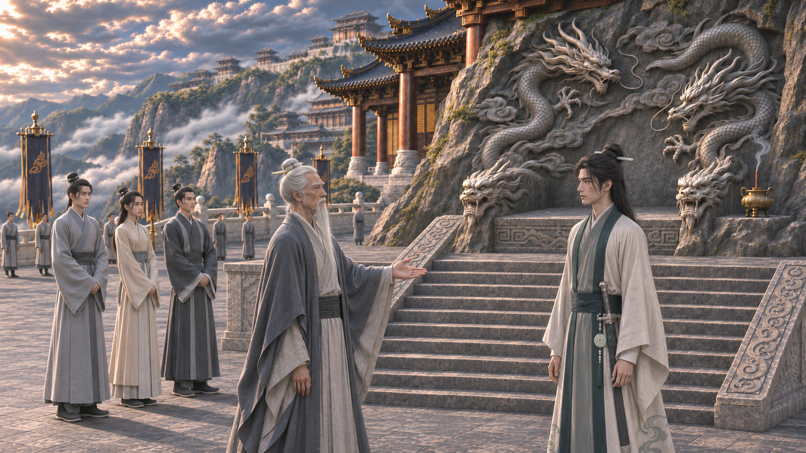
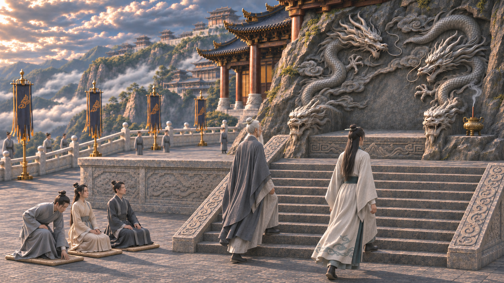
出镜人物参考 · 3 组


第2段 · 筑基是什么，先坐下再说
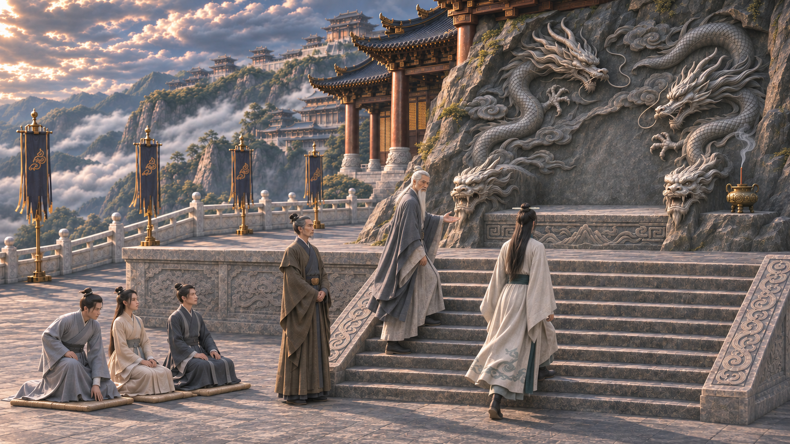
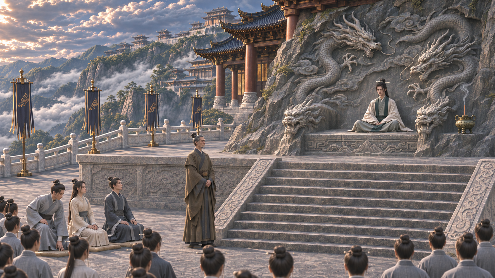
出镜人物参考 · 4 组


第3段 · 一个时辰，谁也不敢先下课
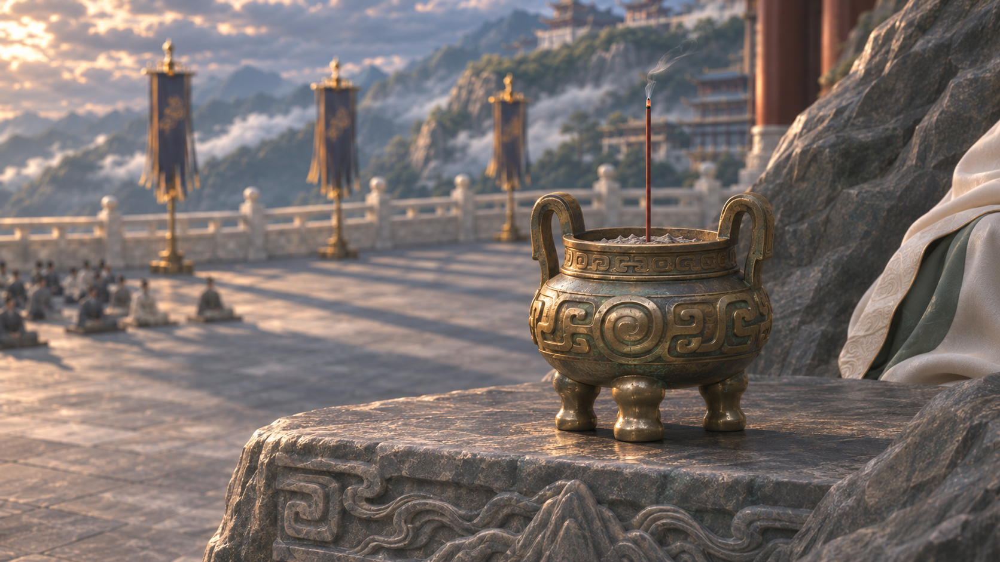
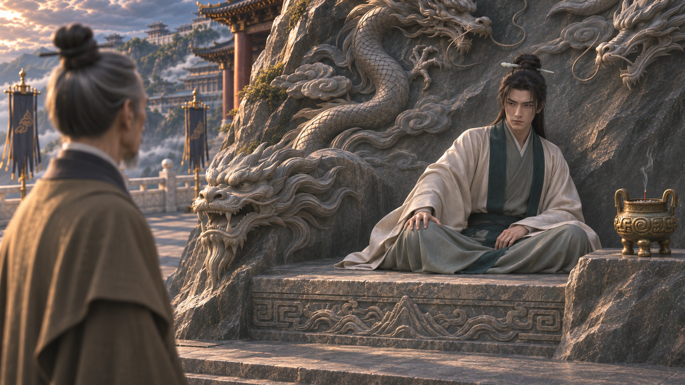
出镜人物参考 · 3 组


第4段 · 大道无言，满场都悟了
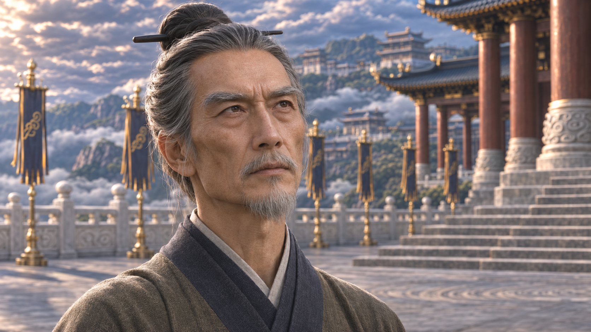
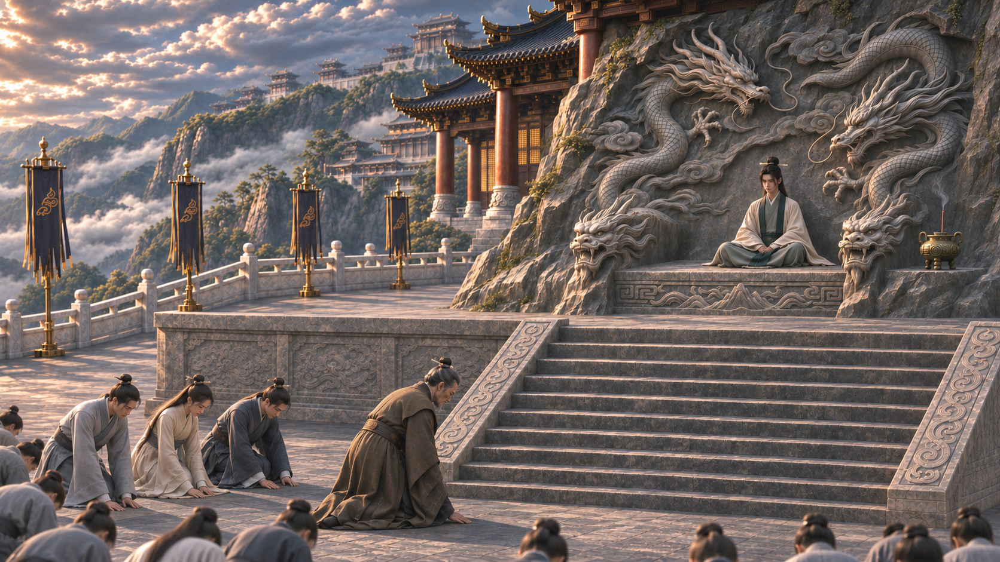
出镜人物参考 · 3 组

第5段 · 讲完没讲的课，先找口饭
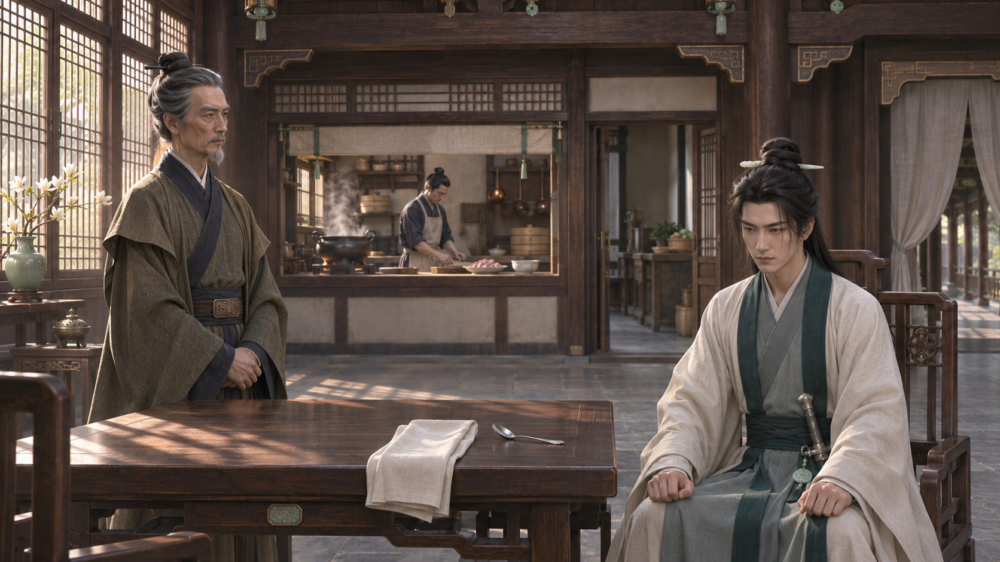
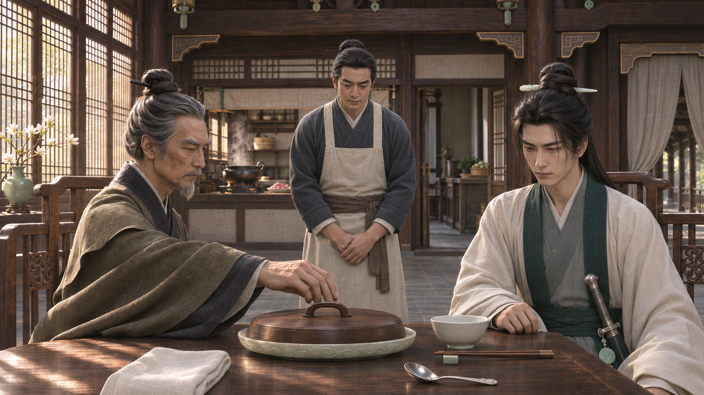
出镜人物参考 · 3 组


第6段 · 想吃火锅，端来九转龙髓丹

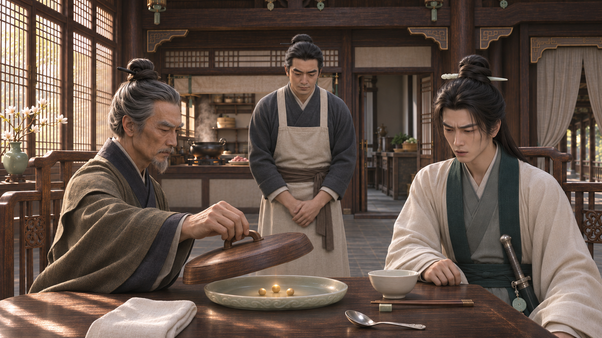

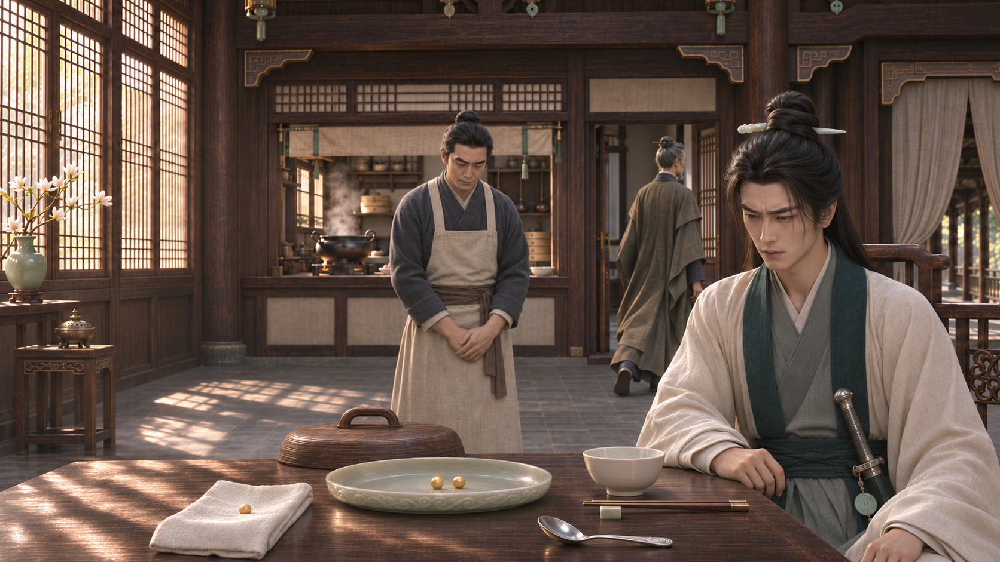
出镜人物参考 · 3 组


第7段 · 偷偷要碗清汤面

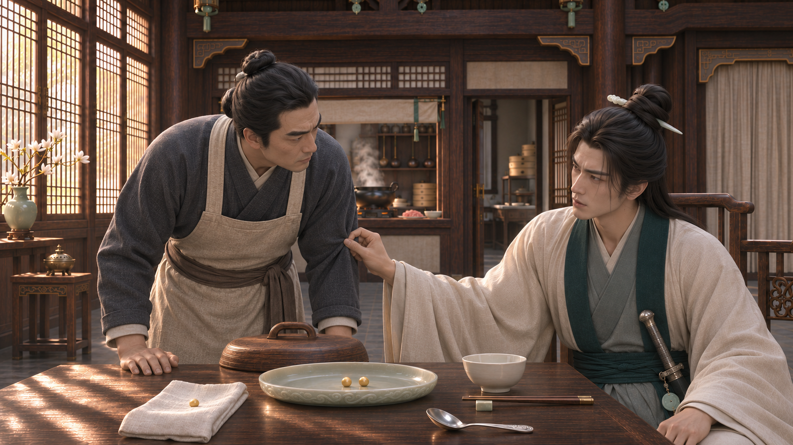

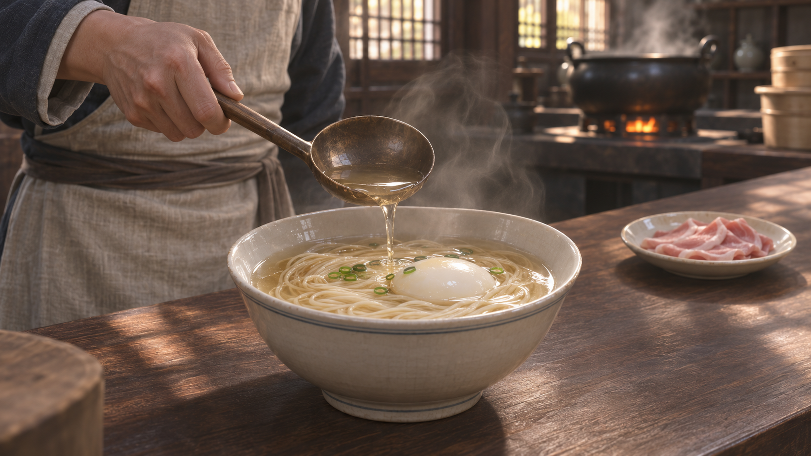
出镜人物参考 · 2 组


第8段 · 一碗面，把仙宴吃成素宴

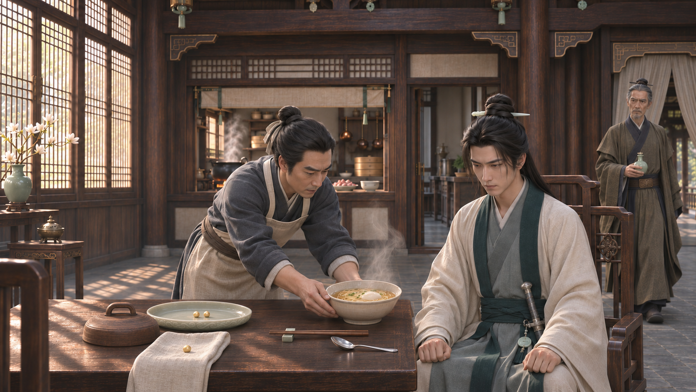

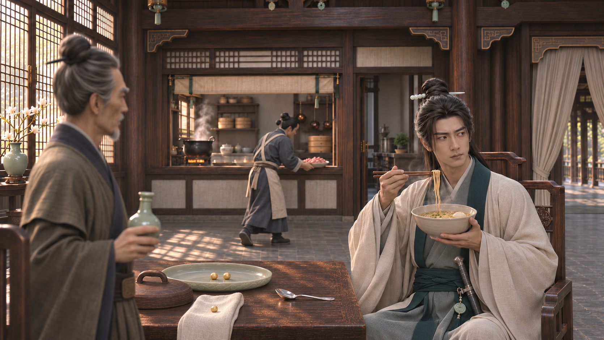
出镜人物参考 · 3 组